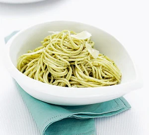

Easy pesto pasta

Description
This supper couldn't be easier. Make our filling pesto pasta recipe for a quick, family-friendly dish you can throw together with storecupboard ingredients
Ingredients
- 500g pack spaghetti , fresh or dried
- 2-3 tbsp pesto from a jar, or see tip below to make your own
- 50g parmesan (or vegetarian alternative), shaved or grated
Steps
- Boil spaghetti in a large pan according to pack instructions. Drain well, then return to the pan with the pesto and half the Parmesan. Toss well, then tip into a serving bowl and sprinkle with the remaining Parmesan.